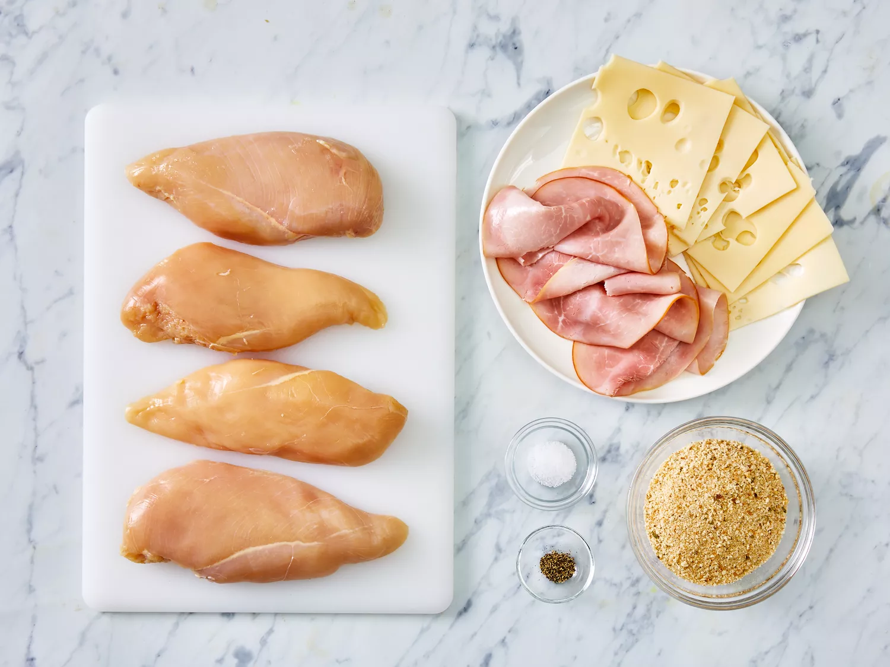

A cordob bleu is a dish that traditionally consists of meat wrapped
around cheese, then breaded and pan-fried or deep-fried. Many modern versions
of the classic French recipe, such as this one, are baked.
Classic chicken cordon bleu is made with the following ingredients:
chicken cutlets, cooked ham, Swiss cheese, bread crumbs, and simple
spices. It`s usually topped with a rich cream sauce spiked with a hint of Dijon mustard.
"Cordon Bleu" translates to "blue ribbon".
Prep Time:
10 mins
Total Time:
45 mins
Yield:
4 servings
Cook Time:
35 mins
Servings:
4
There are many ways to make chicken cordon bleu, from the traditional
French method to the simple oven-baked one detailed here. You`ll find the full
recipe below.
Step 1
Gather all ingredients.
Step 2
Preheat oven to 350 degrees F (175 degrees C). Coat a 7x11-inch baking
dish with nonstick cooking spray.
Step 3
Pound chicken breasts to 1/4 inch thickness.

Step 4
Sprinkle each piece of chicken on both sides with salt and pepper.
Place 1 Swiss cheese slice and 1 ham slice on top of each breast.

Step 5
Roll up each breast and secure with toothpicks.


Step 6
Place in the prepared baking dish and sprinkle chicken evenly
with bread crumbs.

Step 7
Bake in the preheated oven until chicken is no longer pink,
30 to 35 minutes.
Step 8
Remove from the oven, and place 1/2 Swiss cheese slice on top of each
breast.

Step 9
Return to the oven until cheese has melted, 3 to 5 minutes.
Remove toothpicks and serve immediately.
419-Calories
13g-Carbs
19g-Fat
46g-Protein